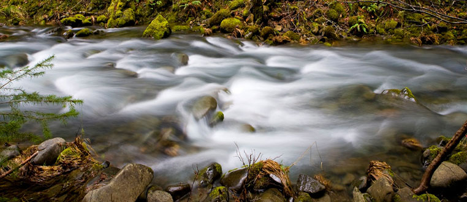
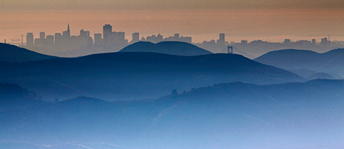
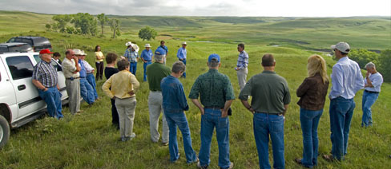
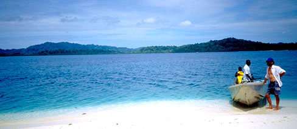
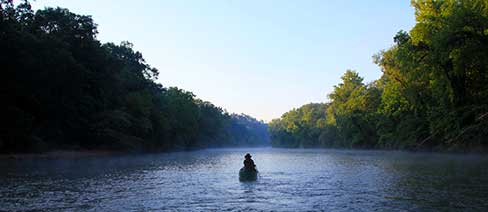

|
|||||||||||||||||
 |
|||||||||||||||||
For two decades, The Nature Conservancy’s work has been guided by a framework we call Conservation by Design. From the beginning, Conservation by Design has unified our efforts around the world by providing a common language and consistent approach across the diversity of systems, cultures, geographies and communities in which we engage. It has guided us in identifying what to conserve and where and how to conserve it, and in measuring our effectiveness.
Conservation by Design articulates our conservation vision and marries our collaborative, science-based approach with key analytical methods. Around the world, this strategic framework guides the Conservancy and our partners in conserving the lands and waters on which all life depends.
Within The Nature Conservancy, business plans build on the contextual information generated through Conservation Planning – Ecoregional Assessments, Conservation Action Plans, Results Chains, and Strategy Effectiveness Measures. Business planning describes how the organization will execute on the strategies generated in conservation planning, and deliver the outcomes proposed.
Conservation by Design articulates our conservation vision and marries our collaborative, science-based approach with key analytical methods. Around the world, this strategic framework guides the Conservancy and our partners in conserving the lands and waters on which all life depends.
Conservation Action Planning (CAP) is a relatively simple, straightforward and proven approach for planning, implementing and measuring success for conservation projects. CAP is TNC's version of the Open Standards for the Practice of Conservation.
Conservation Action Planning addresses a complete project cycle—including design, implementation and evaluation.
Regional conservation assessments are a process to help prioritize conservation activities. Examples include Ecoregional Assessment, conservation return on investment, tradeoff analysis and multi-objective spatial planning.
Tools:From models, to online databases, to GIS software, our library of conservation tools and resources has something for everyone. There are many different kinds of tools and resources here, but in general they all help users develop, manage, analyze, use, and publish conservation information.
Core Data: For information about key conservation data sets.
The Atlas of Global Conservation: The Atlas of Global Conservation gives us the most comprehensive look at our planet today. In over 80 global maps, it describes the natural world, the challenges it faces, and what we can do to protect it. Now The Nature Conservancy aims to share that knowledge beyond the pages of the book in order to further motivate and empower people to protect ecosystems and conserve biodiversity by making their data and analysis widely accessible online.
Freshwater ecosystems contain important biodiversity and provide the water essential to people’s social and economic well-being. Unfortunately, poor management practices, coupled with growing water demands, have made freshwater species the most threatened on Earth, with extinction rates 4-6 times higher than their counterparts.
Pressure on freshwater systems comes from removing too much water to grow crops; contamination from economic activities (e.g., discharges from industry), land use practices (e.g., increased sediment in streams due to clearing, etc.), human waste (e.g., inadequate wastewater treatment); and new infrastructure (dams, diversions and levees). Fortunately, a number of opportunities exist to turn this crisis around.
The Nature Conservancy’s mission requires that we understand this context and help move toward a more hopeful future. To do so, we partner with people around the world, using science to equip leaders to make smart choices about how we use rivers and lakes.
The numbers are well documented: a global population of more than 9 billion people by 2050, placing pressures on our planet unheard of in history. Over the next 30 years, the increase in demand for food, fiber and energy will double. To achieve a future where people and nature flourish together requires that we augment our land protection strategies to find innovative solutions that benefit both people and our planet.
Through our global network of scientists and conservation experts, we are focusing on system-level solutions for healthy landscapes. This approach has multiple benefits: improving livelihoods and creating rural jobs; improving food and water security; protecting habitats to support biodiversity; and reducing risk from climate change.
Our strategies are aimed at creating green growth – and ensuring that we can work across whole landscapes on regional, national and global scales. We do this by engaging governments, the private sector and local communities to ensure that conservation is a critical outcome in economic development.
Partnering with communities and Indigenous peoples to act as the best stewards of conservation and green growth;Advancing siting and mitigation practices where development is occurring through our science-based Development by Design work;
Transforming how development occurs on working lands to drive sustainable commodity production and green growth in agriculture, forestry, and other sectors; andInfluencing policy and practice to include a much stronger and broader recognition of the role of natural carbon storage in climate solutions.
For The Nature Conservancy, land conservation is our legacy and our future. Today, it is about transforming our land-use practices and finding a better development trajectory for all.
Oceans contain the majority of the Earth’s biodiversity, and marine and coastal ecosystems provide food, income, protection, cultural identity, and recreation for billions of people. Development patterns and habitat loss, destructive and unsustainable fishing, land-based pollution and nutrient inflows, and the effects of climate change threaten the ability of coastal and marine ecosystems to provide these services. The Nature Conservancy's conservation mission and commitment to delivering long-term benefits to people and nature require our urgent action to design, put in place, and sustain management approaches that protect marine life while accommodating an increasing number and intensity of ocean uses.
Our planet is changing. Every day seems to bring a new round of extreme weather: wildfires in Russia, drought and famine in Africa, record flooding on the Mississippi River, 40 straight days of triple-digit temperatures in Dallas, Texas.
Climate change is rapidly altering the natural world that provides us with water to drink, soil to grow food, oceans to sustain fisheries and forests to clean our air. Only by managing carbon pollution from all sources - factories, forest clearing, transit - can we bring the climate system back into balance. And even then we will need to adjust to a different world.
With 60 years of experience protecting nature in all its forms, The Nature Conservancy has a unique role to play in addressing climate change: building understanding of its causes and impacts, demonstrating the power of natural systems to protect people and nature and applying solutions through policy.
Around the globe, people are moving into cities at an astonishing rate. By 2050, there will be 9 billion people on Earth, and a staggering 75 percent of them will live in cities. And cities are in a precarious position: rapid growth has the potential to make them profoundly unlivable places, at the mercy of floods, storms and polluted air.
The Nature Conservancy knows that demonstrating the power — and value — of nature can help cities manage the challenges they face. Our goal is to fundamentally change the relationship between cities and nature, so that both can thrive. By bringing the power of nature into cities, we can simultaneously support biodiversity conservation and connect people with the natural world. More information on our Cities program.
Please view our Healthy Trees, Healthy Cities site for more information on our work to protect trees in urban environments,
Fire is an essential force that has shaped life around the globe, but in many ecosystems today, the role of fire is severely out of balance. The Nature Conservancy works to maintain fire’s role where it benefits people and nature, and keep fire out of places where it is destructive. These pages contain information and resources related to the conservation of terrestrial ecosystems, especially those that are significantly affected by fire activity.
Welcome to the new People & Conservation section of the Conservation Gateway. Here you will find a growing library of resources that allow us to incorporate people into the fabric of our conservation work. There is a growing body of information about how to incorporate human well-being into your planning work.
We are currently building up our content for this section. This section will expand to cover the subjects of:
Incorporating human well-being into conservation,Ecosystem Services, andCapacity Building.
To begin, check out the many resources available on human well-being and conservation.
Also, learn more about the Conservancy's Partnership Center.
Ecosystem services are the benefits to people from nature. These benefits include food, water purification, carbon sequestration, soil stabilization, recreation, cultural values, among others. The contribution of natural ecosystems to these benefits is often un-quantified and unmeasured, but the value of such benefits is gradually becoming more apparent as human populations grow and the demand for natural resources increases. Ecosystems can provide for many human needs now and into the future. Literature and research on this topic abounds. Here we focus on ecosystem services at TNC.
The world’s ecosystems are necessary capital assets due to the ecosystem services and the biodiversity they provide. Ecosystem services link people and nature highlighting that people, in many ways, stand to lose as much as the other species in our ecosystems if degradation of natural ecosystems continues. But there is a perceived conflict: people need to use natural capital for their economic and overall welfare, and ecosystems require natural capital to remain healthy. In addition ecosystem health links directly to human welfare and well-being. Ecosystem services can be a solution to the perceived conflict. Thinking about how this link can lead to conservation actions that both protect biodiversity and provide benefits for people’s well-being leading to sustainable use of natural capital, rather than overuse.
The Nature Conservancy’s Africa Program focuses on large intact places with high biodiversity value, where natural ecological processes persist and traditional human livelihoods depend on healthy lands and waters for their survival.
Our conservation approach centers on areas where communal and private conservation efforts buffer government protected areas and play a critical role in sustaining natural process. Well over half of Africa is considered pastoral land; therefore long-term conservation success is only possible when local communities realize benefits from these areas.
Our projects in Kenya, Tanzania, Zambia, Namibia, Gabon and the Western Indian Ocean concentrate on areas where we have a high chance of success. This enables us to envision a future Africa where habitats and people can adapt to multiple pressures thus sustaining the diversity of the natural world while improving the livelihoods of people who depend on its resources.
We work in partnership with government and local NGOs, sharing technical tools, skills and resources, to increase the scale of their impact and implement solutions that preserve nature while improving people’s lives.
Covering more than a third of the Earth’s surface, the Asia-Pacific region is home to some of the planet’s most unique and endangered wildlife—from kangaroos and pandas to sea turtles and dugongs, from colorful reef fish to the world’s last wild orangutan populations.
Rapid development and other pressures from an increasing population and globalization are straining the region’s life support systems. Millions along the Yangtze River already face water shortages. Forests and grasslands throughout Southeast Asia and Australia are burning at unprecedented rates, increasing rather than moderating air pollution and emissions. Fisheries are diminishing as the coral reefs and wetlands that seed them are being suffocated by coastal development and the impacts of climate change. The long-term health of the planet and its people rests in changing this trajectory. And solutions to urgent global problems, like climate change, will succeed or fail based on what happens in Asia. We are working with all sectors of society to accelerate the transition to smarter and sustainable use of these resources.
We work with hydropower companies in China to optimize energy production while managing flood risk. We work with government and NGOs in Australia to help Indigenous groups resume ownership and management of traditional lands. We work with government agencies, mining companies and herders to preserve the vast grasslands that have nurtured Mongolians for centuries. We work with forestry companies and forest communities in Indonesia and Papua New Guinea to bridge ownership conflicts and improve the management of production forests. We work with communal landowners, governments and others in Southeast Asia and the Pacific to protect the world’s richest coral reefs, the lifeblood of island communities and economies.
Our challenge is to balance the economic needs of the world’s most populous and fastest growing region with the urgent need to protect the natural resources that its people depend upon for survival.
We have been working in Africa since 2006 and today we operate in six countries; Gabon, Kenya, Mozambique, Namibia, Tanzania and Zambia.
The Nature Conservancy uses a science-based conservation approach to achieve our mission. Our 600 staff scientists work around the globe, with the majority dedicated to programs and projects in North America.
The work in North America uses science to support the Whole Systems approach (see papers in Key Resources) to conservation with a focus on nine active North America projects: the Gulf of Mexico, California Current, the Great Lakes, Alaska Yukon, Saint Kitts and Nevis Caribbean, Mojave Desert, the Northern Appalachians, the Colorado River, and Chesapeake Bay.
Alaska: A Conservation Assessment and Resource Synthesis for The Coastal Forests and Mountains Ecoregion in the Tongass National Forest and Southeast Alaska
California: Salmon projects
Colorado: Center for Conservation Science and Strategy
Eastern Division: The division covers 18 states and terrestrial, freshwater and marine habitats. The site offers a wide array of the program's Science and Data.
Michigan: Great Lakes Biodiversity Conservation Strategies
Montana: Landscape Weed Modeling Project and an Ecological Risk Assessment of Wind Energy Development
Oregon:Grasslands and the Zumwalt Prairie | Freshwater
West Virginia:Watershed Assessment Pilot Project
Erwin Orvando:A park guard at the Valdivian Coastal Reserve, conducting a routine bird monitoring survey. ©2012 Nick Hall
The Nature Conservancy has worked in South America for more than 35 years, collaborating with other non-profits and with local governments, indigenous groups, farmers, ranchers and corporations. By working in these partnerships, we have already been able to play a key role in conserving more than 72 million acres of vital natural areas.
Building on a sound base of good science, we have designed strategies and projects that represent highly innovative approaches to conservation in the 16 countries where we work. We are engaging new partners and deploying new tools that make use of the same market forces that threaten biodiversity. And we are drawing ever more clearly the linkages between what is good for nature and what is good for people.
Our conservation projects seek to demonstrate practical solutions to the pressing problems that natural ecosystems – and humans who rely on them – are facing across Latin America.
In the Amazon, we work closely with indigenous groups, and have helped them access and apply the resources they need to manage their lands sustainably. We also work there with ranchers, farmers, corporations and local governments to find verifiable ways to reduce carbon emissions from deforestation. In the Andes, we have pioneered the use of water funds to protect and restore watersheds that provide clean water to millions; other projects are now testing similar models in the forests and watersheds that supply water to São Paulo and Rio de Janeiro. From Chilean vineyards and Peruvian fishing grounds to Patagonian sheep ranches and Brazilian soy fields, we are working with industries and individuals to respond to fast-growing markets for sustainably produced goods.